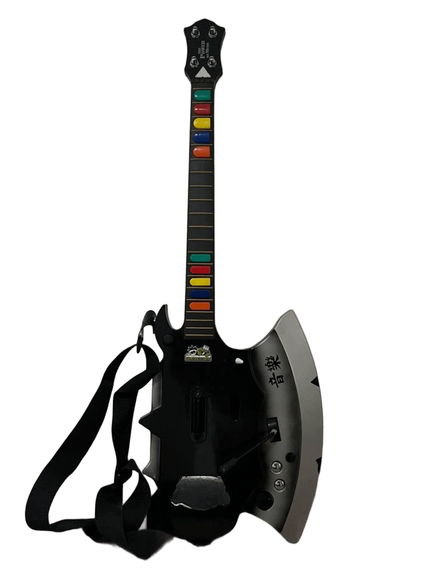

Nintento family (famicom)
Lanzamiento: 22 mayo de 1983
Consola de la empresa japonesa Nintendo vendida en Japón a partir de 1983. Previamente, entre 1977 y 1980, Nintendo había sacado para el mercado japonés una serie de consolas (tipo pong) denominadas "Color TV Games". La Nintendo Family Computer (8 bits), conocida como Famicom, fue el primer gran éxito de la empresa japonesa. Sus versiones, adaptadas a los mercados locales, llegaron a tener difusión mundial: en Corea se vendió como "Hyundai Comboy", en Rusia como "Dendy", en el sur de Asia como "Tata Famicon" y en los países occidentales como "Nintendo Entertainment System" (NES). La "NES" se introdujo en USA en 1985 y en Europa y Australia en 1986. Le siguieron la Super Nintendo (16 bits) en 1990, la Nintendo 64 (64 bits) en 1996, la GameCube en 2001 y varias versiones de la Wii a partir de 2006.
La "Famicom" incorporaba un procesador con tecnología MOS 6502 (RP2A03G), una PPU (RP2C02G-0) como unidad de procesamiento de gráficos (Picture Processing Unit), 2K de WRAM (en un IC), 2K de VRAM (en un IC) y 256 bytes de RAM (dentro de la PPU) para el mapa de bits. Disponía de un modo gráfico con una paleta de 48 colores (y cinco tonos de grises) y sonido mono. Los juegos se proporcionaban en un cartucho. En la carcasa superior tenía un interruptor de encendido/apagado (POWER), una palanca para expulsar los cartuchos (EJECT) y un pulsador de reinicio (RESET). El puerto para cartuchos (60 pines) estaba situado en la carcasa superior oculto debajo de una tapa de color rojo. A derecha e izquierda tenía un compartimento lateral para cada uno de los controladores.
Nintento Wii

Lanzamiento: 19 de noviembre de 2006
Nintendo Wii es la sexta videoconsola descontinuada producida por Nintendo y estrenada el 19 de noviembre de 2006 en Norteamérica y el 8 de diciembre del mismo año en Europa. Perteneciente a la séptima generación de videoconsolas,es la sucesora directa de GameCube y compitió con la Xbox 360 de Microsoft y la PlayStation 3 de Sony. Nintendo afirmó que Wii está destinada a una audiencia más amplia a diferencia de las otras dos consolas.Desde su debut, la consola superó a sus competidoras en cuanto a ventas, y, en diciembre de 2009, rompió el récord como la consola más vendida en un solo mes en Estados Unidos.
La característica más distintiva de la consola fue su mando inalámbrico, el Wii Remote, el cual se usaba como un dispositivo de mano con el que se podía apuntar, además de que detectaba movimientos en un plano tridimensional. Otra de sus peculiaridades era el servicio WiiConnect24, que permitía recibir mensajes y actualizaciones a través de Internet en modo de espera.14 Adicionalmente, la consola puede sincronizarse con la portátil Nintendo DS, lo cual permite que Wii aproveche la pantalla táctil de la Nintendo DS como mando alternativo.
Guitarra hacha Sharknet Nintendo Wii

Lanzamiento: 2007
La guitarra hacha Sharknet para la Nintendo Wii es un accesorio que se hizo famoso entre los fanáticos de los videojuegos de música, especialmente aquellos que disfrutaban de "Guitar Hero" y "Rock Band". Este instrumento, que combina un diseño llamativo con funcionalidades específicas para el juego, se caracteriza por su forma única que recuerda a un hacha.
La historia de esta guitarra se remonta a la necesidad de los jugadores de tener controladores más auténticos y ergonómicos para mejorar su experiencia de juego. La Sharknet fue creada por una compañía que quería destacar en el mercado de accesorios para consolas. Atraía la atención por su diseño audaz y colores vibrantes, así como por sus características técnicas, que permitían una jugabilidad fluida y precisa.
A medida que los juegos de música crecían en popularidad, la guitarra hacha Sharknet se convirtió en un accesorio de culto, apreciado por su estética y funcionalidad. Los jugadores disfrutaban de la sensación de tocar con un instrumento que, aunque ficticio, ofrecía una experiencia más inmersiva y divertida.
Sin embargo, como ocurre con muchos accesorios de videojuegos, su popularidad fue efímera. Con el tiempo, el auge de nuevos juegos y tecnologías llevó a una disminución en la demanda de productos como la Sharknet. Aun así, para quienes tuvieron la oportunidad de usarla, la guitarra hacha representa un recuerdo nostálgico de una era dorada para los juegos de música.
PlayStation(PS1)
Lanzamiento: 3 de diciembre de 1994

La Sony PlayStation , también conocida como PSX (modelo original) o PS1 , e incluso PSOne (específicamente por el modelo móvil), es la consola original de Sony y fue parte de la quinta generación de consolas. El modelo original se lanzó en Japón el 3 de diciembre de 1994; luego se lanzó en todo el mundo en el año siguiente de 1995: América del Norte el 9 de septiembre, Europa el 29 de septiembre y Australia el 15 de noviembre. El modelo móvil posterior, la PSOne, se lanzó en 2000: en Japón el 7 de julio, América del Norte el 19 de septiembre y Europa el 29 de septiembre.
La consola resultó popular por su extensa biblioteca de juegos, franquicias populares, bajo precio minorista y marketing juvenil agresivo que la anunciaba como la consola preferible para adolescentes y adultos. Las franquicias Premier de PlayStation incluyeron Gran Turismo, Wipeout, Crash Bandicoot, Spyro, Tomb Raider, Resident Evil, Metal Gear Solid, Tekken, y Final Fantasy, todas las cuales generaron numerosas secuelas. Los juegos de PlayStation continuaron vendiéndose hasta que Sony cesó la producción de PlayStation y sus juegos el 23 de marzo de 2006, más de once años después de su lanzamiento y menos de un año antes del debut de PlayStation 3
PlayStation 2

Lanzamiento: 4 de marzo de 2000
La PlayStation 2 (oficialmente abreviada como PS2) fue una consola de sobremesa desarrollada por Sony Computer Entertainment.
Es la sucesora de la PlayStation, y es la segunda en la familia de consolas PlayStation.
Fue publicada el 4 de marzo de 2000 en Japón, el 26 de octubre de 2000 en América del Norte, el 24 de noviembre de 2000 en Europa y el 17 de noviembre de 2000 en Australia.
Compitió con la Dreamcast de Sega, la Xbox de Microsoft y la GameCube de Nintendo, formando parte de la sexta generación de consolas de videojuegos.
Anunciada en 1999, la PlayStation 2 fue la primera consola PlayStation en ofrecer compatibilidad con versiones anteriores del controlador DualShock de su predecesor, así como con sus juegos.
La PlayStation 2 es la consola de videojuegos más vendida de todos los tiempos, con más de 155 millones de unidades vendidas, de las cuales 150 millones fueron confirmadas por Sony en 2011.
Desde su lanzamiento se han publicado más de 3.874 títulos de juegos para el PS2 y se han vendido más de 1.500 millones de copias.
Sony fabricó varias revisiones más pequeñas y ligeras de la consola, conocidas como los modelos Slimline en 2004 y mucho más tarde, en 2006 anunció y lanzó su sucesor, el PlayStation 3.
Incluso con el lanzamiento de su sucesor, la PlayStation 2 se mantuvo popular hasta en la séptima generación
Continuó produciéndose hasta el 4 de enero de 2013, cuando Sony finalmente anunció que la PlayStation 2 había sido descontinuada después de 13 años de producción, convirtiéndola en una de las consolas que más ha durado en el mercado.
A pesar del anuncio, los nuevos juegos para la consola continuaron produciéndose hasta finales de 2013, incluyendo Final Fantasy XI: Seekers of Adoulin para Japón, Pro Evolution Soccer 2014 para Norteamérica y Europa, y FIFA 14 para Brasil
Sega Genesis
Lanzamiento: 29 de octubre de 1988
La Sega Genesis (o Mega Drive , como se la conocía en otros territorios) fue una consola de videojuegos doméstica de 16 bits. Contaba con una gran biblioteca de juegos y muchas franquicias exclusivas. Sus principales competidores fueron la NES de 8 bits de Nintendo y, posteriormente, la SNES de 16 bits .
Más tarde en la vida de la consola, se agregaron dos complementos: el Sega CD , que permitía reproducir juegos de CD, y el Sega 32X , que tenía una biblioteca de juegos de 32 bits.
La consola se presentó en tres modelos, además de una versión portátil llamada Sega Nomad . The Nerd posee todas ellas.
Hubo varias cosas que molestaron al Nerd en términos de la Sega 32X. Uno, se inserta en la parte superior de la Genesis, y afirma que una Genesis Modelo 1 necesita clavijas de metal en su ranura antes de que se pueda insertar el complemento 32x. Dos, sus juegos no están etiquetados en los extremos. Tres, tiene su propio adaptador de corriente, que es una especie de "caja" en su enchufe, que dice que ocupa demasiado espacio. Cuatro, se fabricó poco antes de la Sega Saturn. Al final del video que explica el complemento, lo quema.
Sega Game Gear
Lanzamiento: 6 de octubre de 1990
La Sega Game Gear es una videoconsola portátil creada por Sega en respuesta a la Game Boy de Nintendo. Es la tercera consola portátil con pantalla en color de la historia, después de la Atari Lynx y la Turbo Express.
El proyecto comenzó en 1989 bajo el nombre de "Project Mercury" y fue lanzada en Japón el 6 de octubre de 1990. En América y Europa fue lanzada en 1991 y en Australia en 1992. El soporte para este sistema se abandonó a principios de 1997.
La Game Gear fue básicamente una Master System portátil con menor resolución pero que permitía una paleta de colores mayor, y potencialmente mejores gráficos. Además podía producir sonido estéreo (disponible utilizando su salida de auriculares), una característica que la Master System, con su salida mono, tampoco poseía. Sin embargo, muy pocos juegos fueron programados con sonido estéreo. Uno de los pocos juegos que lo incluía era por ejemplo G-LOC: Air Battle.
Debido a las semejanzas técnicas de la Game Gear con la Master System, era muy sencillo portar los juegos para la portátil. De hecho, era posible escribir directamente los juegos de Master System en cartuchos para Game Gear sin necesidad de reprogramación. Además, un adaptador llamado "Master Gear Converter" permitía insertar cartuchos de la Master System directamente en la Game Gear. El proceso inverso (usar juegos de Game Gear en la Master System) no era posible debido a la mayor paleta de colores de la portátil.